Library
Approved application · approved logoEvery image below is an actual canonical PNG. Open an image for its full resolution. These are authored design scenes, not current-app browser captures.
Library tree · expanded
tree-expandedActions and implementation pointers
+ New page · Journal · Explore · All pages · ⌄ · Reflections · › · Reading · Ask Journl · Today’s Journal · Close · Instant · Thinking
apps/web/src/app/(app)/@appSidebar/_components/app-sidebar-pages.tsxapps/web/src/app/(app)/folders/_components/folder-nested-pages-list.tsxapps/web/src/app/(app)/pages/_components/page-editor.tsx

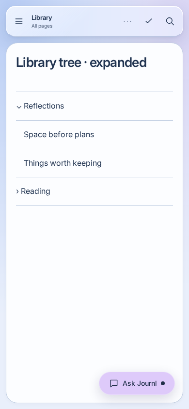
SHA256 a2f64e70c91706bd97755f01c444d8cdb20381a08c1f7a223c3d7d181e3d6829

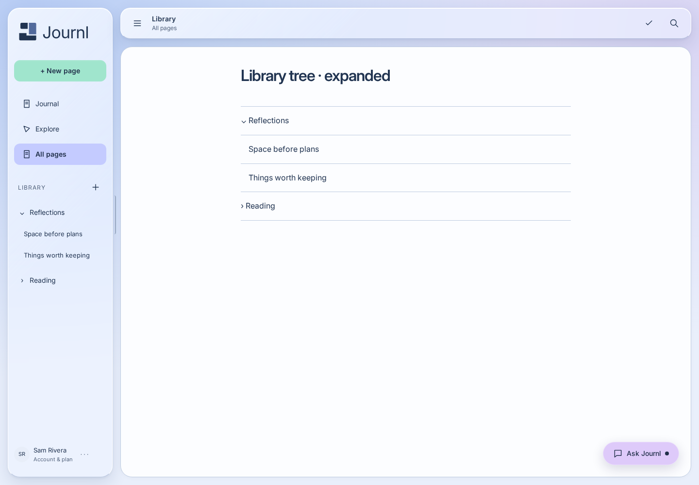
SHA256 d255c00f13bd7707e2a920b4931305a878005800240a27ec826317da1b832066

SHA256 41771f2d7171a17c2d22dfdba545e363bba19dd7e0552b1e9f5ee833c0f1e999

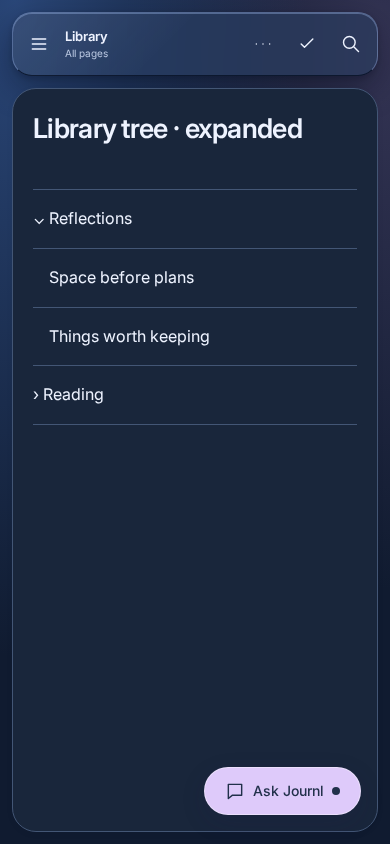
SHA256 1d07a6f1cf0c52471ef163c86db27a68dd2d4e4f53dccee934973fdd19daada7
Library tree · collapsed
tree-collapsedActions and implementation pointers
+ New page · Journal · Explore · All pages · ⌄ · Reflections · › · Reading · Ask Journl · Today’s Journal · Close · Instant · Thinking
apps/web/src/app/(app)/@appSidebar/_components/app-sidebar-pages.tsxapps/web/src/app/(app)/folders/_components/folder-nested-pages-list.tsxapps/web/src/app/(app)/pages/_components/page-editor.tsx

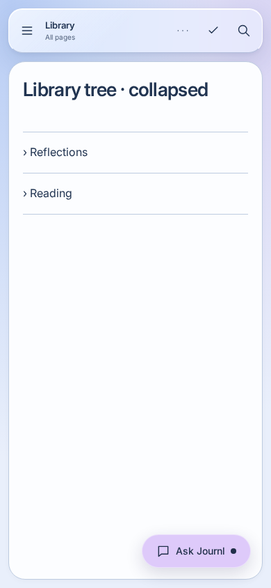
SHA256 ca873d3f2baec692fda81e3cf385f7af476e23f97be8ebc018aab0675cff2300

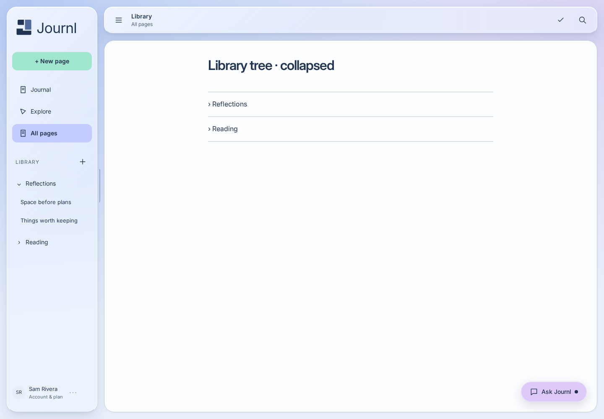
SHA256 f50deee24928bae646a2e08922e0a7c4d5dc4244ac4e7da3e2de51f4bbb1a7e0

SHA256 e2fa3cc0a7557f9dbd6f7531d19a26971e001f62c007f6f11f198074e0850f91

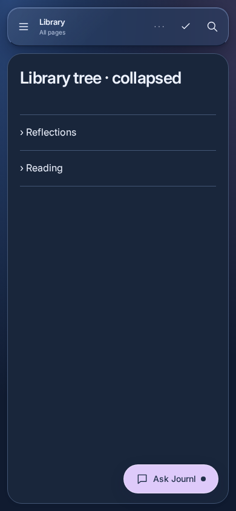
SHA256 f0b71d33a0535d4d8ce9758602848934c6f583137a9c8956c23e92bccc5e5ce7
Library tree · deep
tree-deepActions and implementation pointers
+ New page · Journal · Explore · All pages · ⌄ · Reflections · › · Reading · Ask Journl · Today’s Journal · Close · Instant · Thinking
apps/web/src/app/(app)/@appSidebar/_components/app-sidebar-pages.tsxapps/web/src/app/(app)/folders/_components/folder-nested-pages-list.tsxapps/web/src/app/(app)/pages/_components/page-editor.tsx

SHA256 49a0c97d60e0bab87d0cd98c8b146da3251ed80abf1d850add076f6442849d11

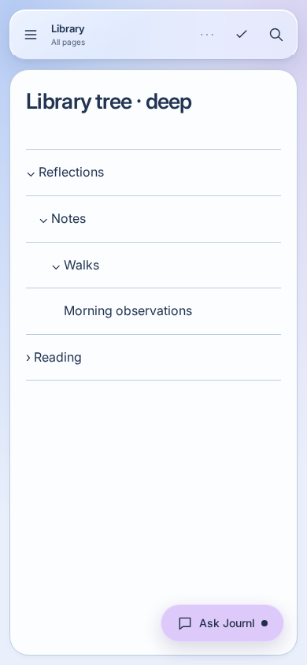
SHA256 042b78f43ebfd11294bd5f6535bb774abba781514cda4fbdaede5a9eada72f8e

SHA256 f9a5ea4d3ab95fbb0b8d99f170b38d6d5f06466e50f952db7eb855be50d78e61

SHA256 d424c8fa856984ed8b07cf75572dc59a2803731ed1547f1556b2a9a5e8b368f4
Library tree · loading
tree-loadingActions and implementation pointers
+ New page · Journal · Explore · All pages · ⌄ · Reflections · › · Reading · Ask Journl · Today’s Journal · Close · Instant · Thinking
apps/web/src/app/(app)/@appSidebar/_components/app-sidebar-pages.tsxapps/web/src/app/(app)/folders/_components/folder-nested-pages-list.tsxapps/web/src/app/(app)/pages/_components/page-editor.tsx

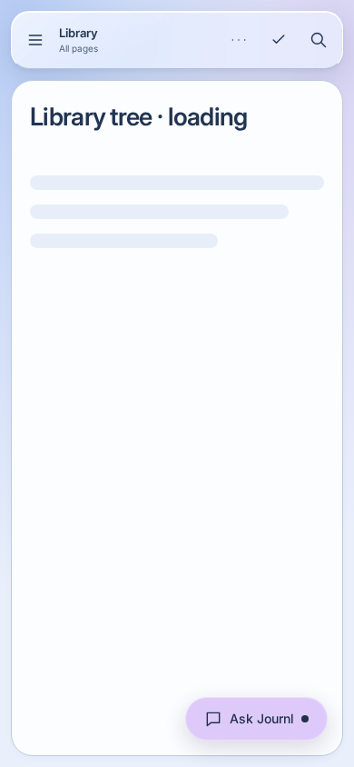
SHA256 21b6cddbfc7a3d7169004f553f008a9cd39a1993d5a19acc0ecc105a15b91fb3

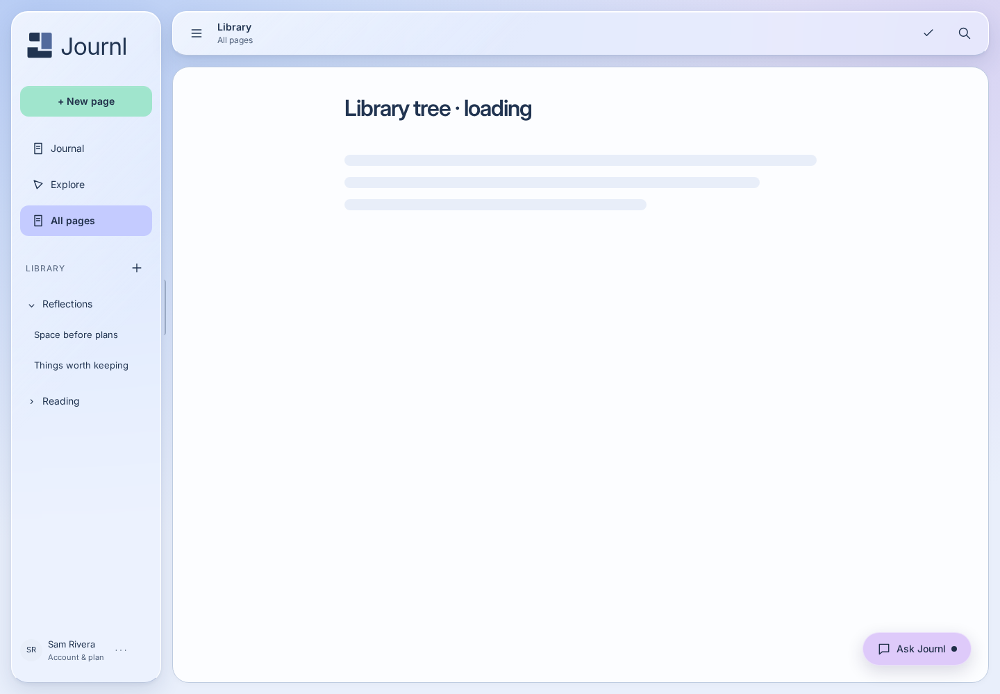
SHA256 6fa95bc5ab9f9ecefa8c696361f23ef03fad7d45119872648350e54b75558675

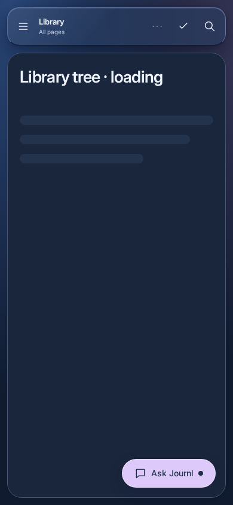
SHA256 7321cea1510bbcfa9c96d83080312e1716d8b652dba017158a4318346c7f1e76

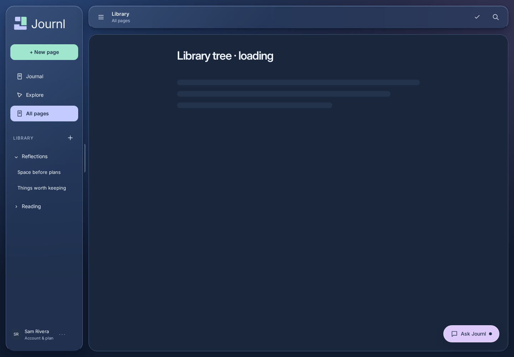
SHA256 b3ddfa067c5bc7b52b2617a8fa17945302ce49efc419910bf48ab735992cb916
Library tree · create-pending
tree-create-pendingActions and implementation pointers
+ New page · Journal · Explore · All pages · ⌄ · Reflections · › · Reading · Ask Journl · Today’s Journal · Close · Instant · Thinking
apps/web/src/app/(app)/@appSidebar/_components/app-sidebar-pages.tsxapps/web/src/app/(app)/folders/_components/folder-nested-pages-list.tsxapps/web/src/app/(app)/pages/_components/page-editor.tsx

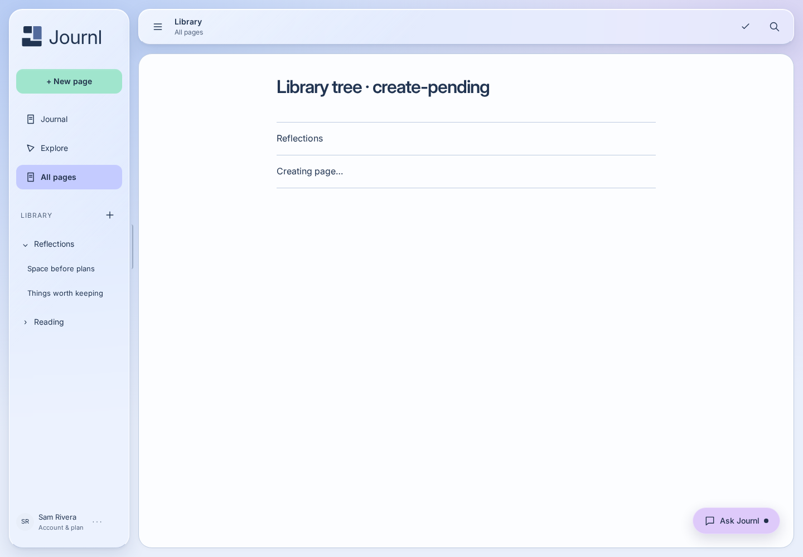
SHA256 5685cd1077b6ec8afd2b061985d08d2b1131118ef99bf411f305cd0cd4e2c5a7

SHA256 dbfb0f0eb33698654ba9b6ae42526c00b0c7232421f4223e065e84635c4e7aed

SHA256 e3a6a4a115ae6600660d82d9c7e67f1158111c3b9ad1521a5f09a362e0166eb0

SHA256 651d15c55b160fd8a6a84a4cb7fff2d726ad684a8a8bb507917200a7234944cf
Library tree · create-error
tree-create-errorActions and implementation pointers
+ New page · Journal · Explore · All pages · ⌄ · Reflections · › · Reading · Ask Journl · Today’s Journal · Close · Instant · Thinking
apps/web/src/app/(app)/@appSidebar/_components/app-sidebar-pages.tsxapps/web/src/app/(app)/folders/_components/folder-nested-pages-list.tsxapps/web/src/app/(app)/pages/_components/page-editor.tsx

SHA256 15e16c32ba85046bfcd5104a2c862b9baa15ed16ea0a9b86bbd59649c346586b

SHA256 4e86c05f8303d4e06841828f09635213697f85a14345c8833aee617326fb10d2

SHA256 019fe841dbee154a158220fe50e4b9563b0409977ad8e3db50bc133b4122a10e

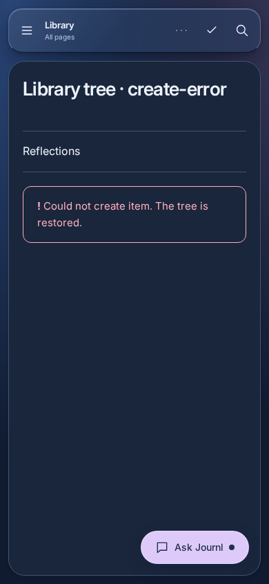
SHA256 25db21d0e9889d85ed446e34592c5c2ae2b9febbf5f43d83ce569cd1cca2bde4
Add to Library
root-addActions and implementation pointers
× · New page · New folder
apps/web/src/app/(app)/@appSidebar/_components/app-sidebar-pages.tsxapps/web/src/app/(app)/folders/_components/folder-nested-pages-list.tsxapps/web/src/app/(app)/pages/_components/page-editor.tsx

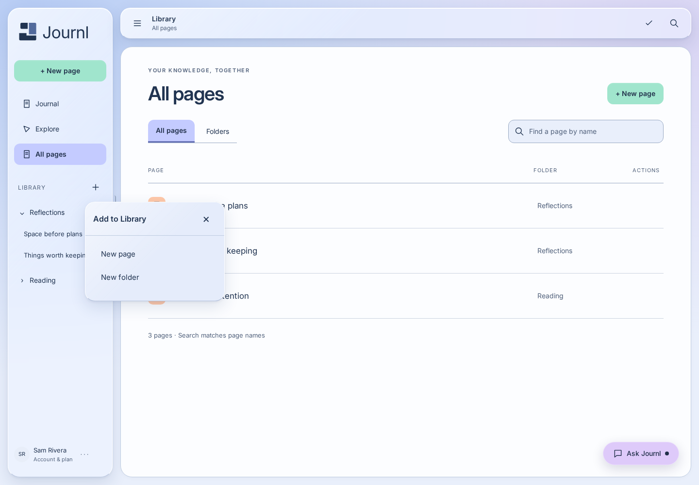
SHA256 70c9d7cf5dad677f70ebbb3c6e79ad7033f2bbde7a440917e272c06236f5b23e

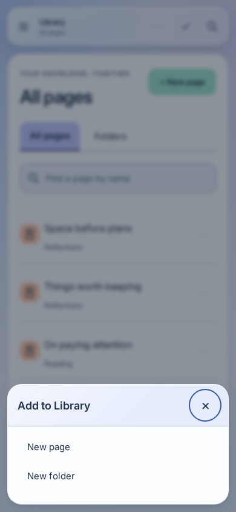
SHA256 7f582fad0d12c1f01f20953974234fb8c9c75c84e8443e1f78f7e9c65190bbe2

SHA256 3ca9acfe45843684ffe25cd1e854229ec716870cb001da5b133d18b32031d0cf

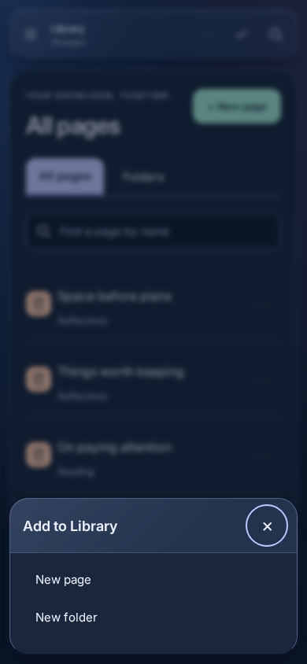
SHA256 ebd63c77d70877f7b07459b24bbaeba91de9252ffbe57eb2142856a9ad229387
Create folder · ready
new-folder-readyActions and implementation pointers
+ New page · Journal · Explore · All pages · ⌄ · Reflections · › · Reading · Folders · Cancel · Create folder · Space before plans · Things worth keeping · On paying attention · Ask Journl · Today’s Journal · Close · Instant · Thinking
apps/web/src/app/(app)/@appSidebar/_components/app-sidebar-pages.tsxapps/web/src/app/(app)/folders/_components/folder-nested-pages-list.tsxapps/web/src/app/(app)/pages/_components/page-editor.tsx

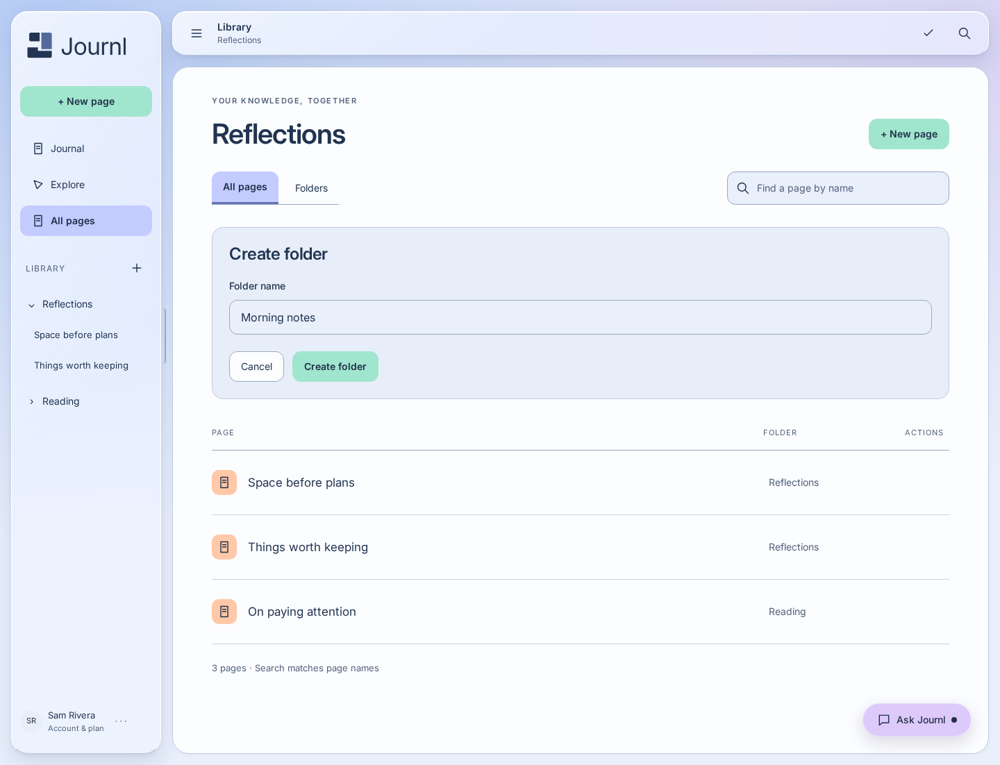
SHA256 eb5cde9483ab66bb31c6bc9da59707449ca516d3865c84d96b7a491c08860d8d

SHA256 a8cbfae267450139d45b814b7f27d4f5d9d57ff3e324ad0d8da5bc335733a5e6

SHA256 ecc028b9860f426c241e4ed5f623b4c5e628ee105fe952f87b37905dcacb9cb1

SHA256 796874d114f2366b93f07b6016ab55c08365d2cd66bf38dd90923474dab558de
Create folder · pending
new-folder-pendingActions and implementation pointers
+ New page · Journal · Explore · All pages · ⌄ · Reflections · › · Reading · Folders · Create folder… · Cancel · Space before plans · Things worth keeping · On paying attention · Ask Journl · Today’s Journal · Close · Instant · Thinking
apps/web/src/app/(app)/@appSidebar/_components/app-sidebar-pages.tsxapps/web/src/app/(app)/folders/_components/folder-nested-pages-list.tsxapps/web/src/app/(app)/pages/_components/page-editor.tsx

SHA256 57c0918ddc828d3adb3b4d8e9d447184a2f61ea77dab8d7d639aa5d70e33af5c

SHA256 7c67d89ee2bad11e9576d1b81b49df49e2e876c00a3846cccd83911e40f0cdfd

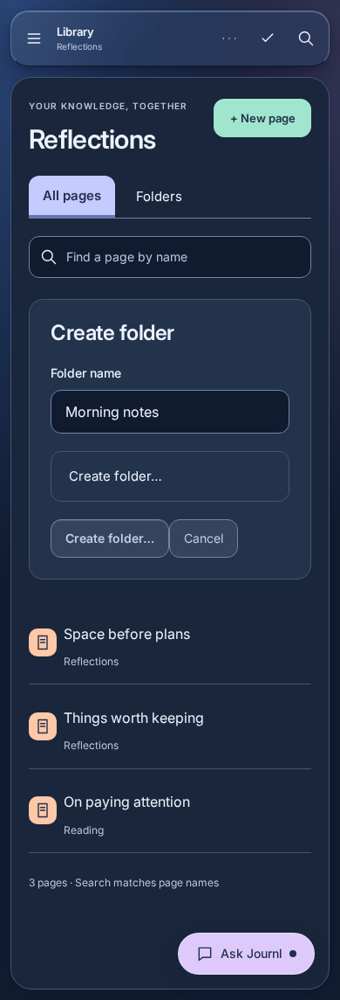
SHA256 eabbae27971d9a95467ca0b006afc15fda08ed8c86d730d317c4040d501dba81

SHA256 30e5e382a288438e79001f642eba9e419cdbcd0a527a12364c5b9652234cda19
Create folder · error
new-folder-errorActions and implementation pointers
+ New page · Journal · Explore · All pages · ⌄ · Reflections · › · Reading · Folders · Cancel · Create folder · Space before plans · Things worth keeping · On paying attention · Ask Journl · Today’s Journal · Close · Instant · Thinking
apps/web/src/app/(app)/@appSidebar/_components/app-sidebar-pages.tsxapps/web/src/app/(app)/folders/_components/folder-nested-pages-list.tsxapps/web/src/app/(app)/pages/_components/page-editor.tsx

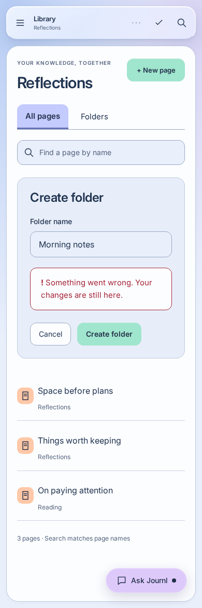
SHA256 f152585718bb7f02950206a23e8702195d1a9c660873117a61601b7da88ecfbc

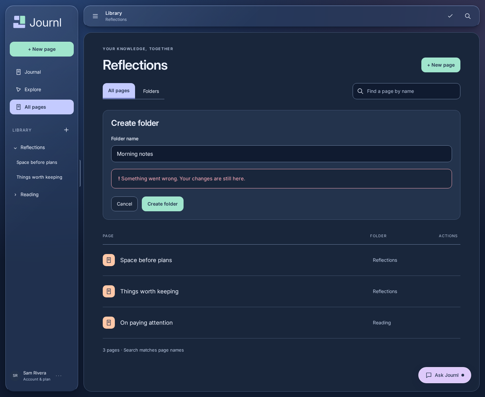
SHA256 b0ddc91e5b2a17bbd90bb3b511abd0e075d167cff3220d54d85cca4327d9aae6

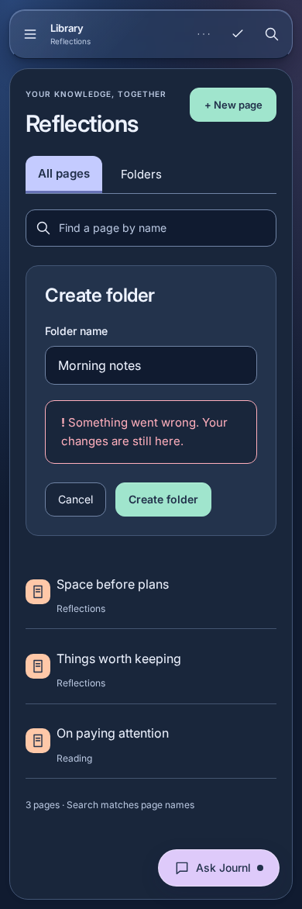
SHA256 65108bf9d643fa60850c0367d0dbd684714c04e84ecc2f56679d0ef0aa6744a9

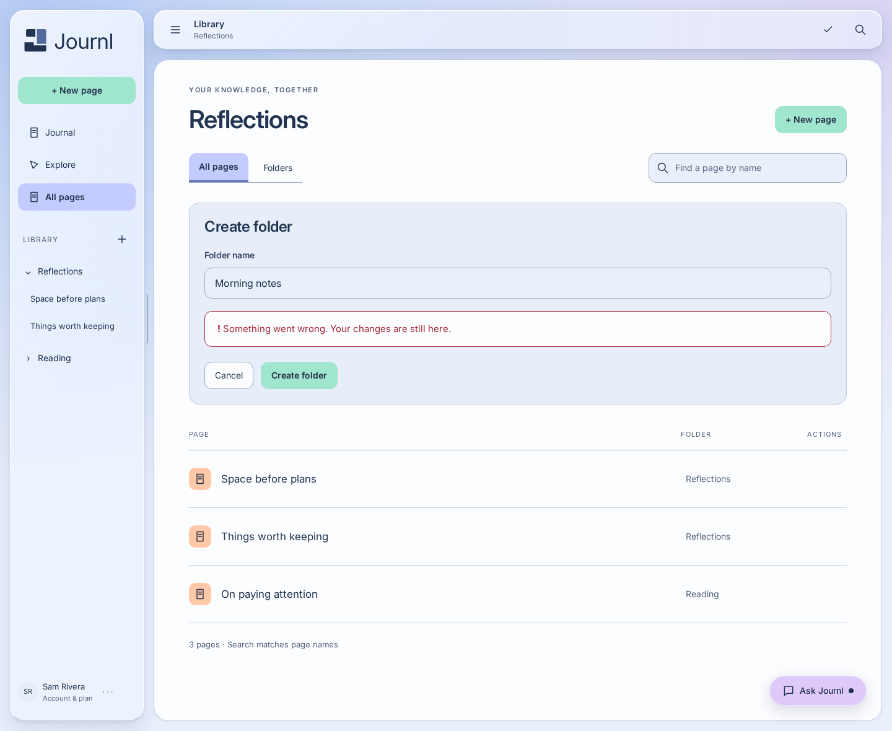
SHA256 e44bd16664742e02bb2c3f999f9710aaa0e1b8bf39dfde48461a81dacc418710